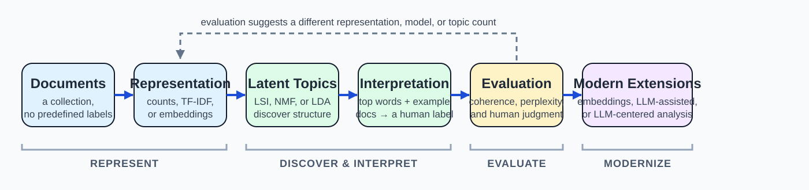

6.1 Topic Modeling and Modern Topic Analysis#
Module 5: Given predefined labels, can we predict the label of new text?
Module 6: Without predefined labels, can we discover meaningful structure in a collection?
This week asks the second question. Instead of predicting a category someone already defined, we ask a model to propose structure we didn’t specify in advance, and then we decide whether that structure is meaningful.

Fig. 14 From a Document Collection to an Evaluated Topic Interpretation#
A useful guiding question for this chapter:
How can we discover, interpret, and evaluate themes in a collection of documents when predefined labels are not available?
Throughout this reading we will use one small running example: six short blurbs pulled from a larger news feed.
Note
“The team practiced free throws for two hours before the championship game.”
“Simmer the tomato sauce on low heat and stir in fresh basil.”
“The new laptop ships with a faster processor and longer battery life.”
“She scored the winning goal in the final minute of the match.”
“Whisk the eggs and fold in the flour gently to keep the batter light.”
“Developers pushed an update to fix the memory leak in the app.”
Nobody labeled these blurbs “sports,” “cooking,” or “technology.” A topic model’s job is to notice that (1) and (4) share vocabulary, that (2) and (5) share different vocabulary, and that (3) and (6) share yet another vocabulary, and to describe those groupings as topics.
1. What Is Topic Discovery?#
Topic discovery is an unsupervised text-analysis task: given a collection of documents and no predefined categories, find the themes running through it. It is useful whenever a collection is too large to read by hand and no existing labels describe what it contains, which is most of the time for real-world text collections.
A computational “topic” is not a word. It is a pattern: a group of terms (and, indirectly, a group of documents) that tend to occur together. Whether that pattern deserves the label “sports” or “cooking” is a separate question, one we return to in Section 3.
Important
Classification (Module 5): predefined labels exist, and the model learns to predict them.
Topic discovery (this module): predefined labels do not necessarily exist, and the goal is to discover meaningful structure in a collection.
Topic discovery builds directly on ideas you already have. You already know how to turn text into vectors (Module 3) and how to compare those vectors (Module 4). This week reuses both representation and comparison, but points them at a new question: instead of comparing two documents, or predicting one document’s label, we look for patterns across an entire collection at once.
2. From Keywords to Topics#
Before looking for topics across a whole collection, it helps to notice patterns within a single document.
A collocation is a sequence of words that occurs together more often than chance would predict: “free throws” and “championship game” in blurb (1), for example. Keyphrase extraction ranks these recurring word groups, often combining raw frequency with the same TF-IDF weighting you saw in Module 3, to surface a document’s most salient phrases [Sar19].
Keyphrases are a useful bridge, but they stop short of topic discovery. They highlight salient terms in one document, but they don’t group co-occurring terms into a broader theme shared across many documents [Sar19]. Knowing that “free throws” is salient in blurb (1) doesn’t yet tell you that blurbs (1) and (4) belong to the same theme. That grouping is what topic modeling adds.
Note
Collocations and keyphrases are worth recognizing conceptually, but the mechanics (n-gram counting, part-of-speech chunking, ranking by TF-IDF) belong in Coding Practice, not here.
3. Classical Topic Models: LSI/LSA, NMF, and LDA#
Classical topic models start from a representation you already know: a document-term matrix, where rows are documents, columns are vocabulary terms, and cells hold counts or TF-IDF weights (Module 3). Three classical techniques take that matrix and factor it into latent structure [Sar19].
Latent Semantic Indexing / Analysis (LSI/LSA)#
LSI applies a matrix-factorization technique (singular value decomposition) to project the document-term matrix into a smaller, latent semantic space [Sar19]. Terms that tend to appear in similar contexts end up close together in that space, even if they never co-occur directly in the same document. One quirk worth knowing: LSI’s term weights can be positive or negative, and the sign is meaningful. Terms sharing the same sign on a topic tend to represent a coherent sub-theme, while opposite signs represent a contrast [Sar19].
For our running example, an LSI-style pass might surface a latent dimension where “goal,” “game,” “team,” and “match” all load with the same sign (an early, rough sketch of a “sports” theme), while “processor,” “app,” and “battery” load with the opposite sign.
Non-Negative Matrix Factorization (NMF)#
NMF factors the same kind of matrix, but requires every weight to be zero or positive [Sar19]. Because there is no cancellation between positive and negative weights, NMF topics tend to be purely additive and are often easier for a human to read at a glance, especially on smaller collections [Sar19].
Latent Dirichlet Allocation (LDA)#
LDA takes a different approach. Instead of factoring a matrix directly, it treats topic discovery as a probabilistic story about how a collection was generated [Sar19]. The two ideas worth carrying forward are:
A document is a mixture of topics. Blurb (1) might be modeled as mostly “sports,” with a trace of “general narrative.”
A topic is a distribution over words. A “sports” topic might assign high probability to “game,” “team,” “score,” and “goal,” and low probability to “sauce” or “processor.”
Note
LDA descends from earlier probabilistic approaches to the same problem, including pLSA. This course does not cover pLSA directly: it is not essential once you understand LDA’s document-mixture and topic-distribution ideas, and neither of this chapter’s two main sources covers it in any depth either.
We deliberately stop at the level of “documents are topic mixtures, topics are word distributions.” The full generative process (Dirichlet priors, Gibbs sampling, or variational inference) is not necessary to interpret and use topic model output, and the underlying libraries (Gensim, scikit-learn) handle that machinery for you. Using those libraries well is a Coding Practice skill, not a reading concept.
Important
LSI, NMF, and LDA all answer the same question, “what latent structure explains this collection?”, with different mechanics and different trade-offs. LSI gives a fast linear-algebra view with mixed-sign weights. NMF gives purely additive, often more readable topics. LDA gives a probabilistic mixture that is usually the most interpretable in terms of “this document is 70% sports, 30% something else.”
4. Interpreting and Evaluating Topics#
A topic model does not output a label. It outputs a list of top-weighted words (and, per document, a distribution over topics). Turning “0.03 x game + 0.02 x team + 0.02 x score + 0.01 x goal” into the label “sports” is an act of human interpretation, not something the model asserts [Sar19].
Important
A model can discover a statistical pattern without knowing what that pattern means. Topic labels are interpretations, not objective truths produced by the model.
Two habits make that interpretation trustworthy:
Read representative documents, not just top words. If a topic’s top words are “game, team, score, goal,” check that it is actually assigning high weight to blurbs like (1) and (4) before labeling it “sports.”
Ask what a topic does not explain. A topic that mixes “team” with “processor” is a sign that the model, the preprocessing, or the chosen number of topics needs another look.
Tip
Try it yourself. Suppose a topic model returns the top words: circuit, chip, analog, voltage, current, signal. What label would you assign? Now suppose the two most representative documents both discuss integrated-circuit design. Does that change or confirm your label? This is exactly the kind of check every discovered topic deserves before it gets used for anything.
Beyond human inspection, two quantitative metrics are commonly used:
Perplexity measures how well the model predicts held-out text. Lower perplexity generally indicates a better statistical fit [Sar19].
Topic coherence (commonly reported as UMass or Cv scores) asks a more direct question: do a topic’s top words tend to actually appear together in real documents? Higher coherence (by the Cv convention) generally means a more human-interpretable topic, and coherence scores are often used to help choose how many topics to ask for [Sar19].
Note
Neither metric replaces judgment. A topic can score well numerically and still be a poor fit for what you actually wanted to learn about a collection. This is the same lesson Module 5 taught about accuracy, precision, and recall: a single number is a signal, not a verdict.
5. Limitations of Classical Topic Models#
Classical topic models share a structural weakness: they represent documents as bags of words, discarding word order and grammar. That has real consequences [Sar19]:
Short texts struggle. A tweet or headline has too few word co-occurrences for count-based methods to find reliable patterns.
Preprocessing does a lot of work. Stopword removal, lemmatization, and vocabulary filtering all shape what the model can possibly discover. A topic model can only find structure in the representation it is given.
Topics are ambiguous word lists. Two people can read the same top-word list and propose different labels, and there is no built-in mechanism to resolve the disagreement.
New vocabulary breaks assumptions. A model trained on one domain can degrade badly when applied to text that uses different words for similar ideas.
These limitations are what motivate the next two sections. They do not mean classical topic models have nothing left to offer: the concepts they teach (documents as mixtures, topics as word distributions, coherence and interpretation) carry forward directly into the modern methods below.
6. From Sparse Counts to Embeddings: Modern Topic Analysis#
Module 4 introduced dense embeddings and cosine similarity as a way to compare two pieces of text by meaning rather than by shared words. The same representation can power topic discovery:
documents → embeddings → clustering → topic representation/label
Instead of a sparse document-term matrix, an embedding-based approach represents each document as a dense vector, groups nearby vectors into clusters, and then describes each cluster using its most distinctive terms [XYL+26].
In our running example, an embedding-based approach does not need blurbs (1) and (4) to share the literal words “game” or “goal.” It only needs their meanings to be close in embedding space, which helps considerably with short text where word overlap is sparse [XYL+26].
Note
This is the same shift Module 4 described for retrieval: sparse, lexical representations are replaced with dense, semantic ones. The clustering and labeling step around the embeddings is what’s new here, not the embeddings themselves.
7. LLM-Assisted and LLM-Centered Topic Analysis#
Large language models have entered the topic-analysis pipeline in two structurally different ways, and the distinction matters for reasoning about any result you are handed [XYL+26]:
Important
LLM-assisted topic analysis: an existing method (LDA, NMF, an embedding-based cluster) performs the actual discovery. An LLM assists around that method: turning a word list into a readable label, merging near-duplicate topics, or judging whether a topic’s words are coherent.
LLM-centered topic analysis: the LLM itself performs the discovery, typically by reading documents directly and proposing themes through prompting or a short multi-step workflow.
Concrete LLM-assisted roles include writing a natural-language label or short description for a topic that a classical or embedding-based method already found, splitting an overly broad topic or merging duplicates, and acting as an evaluator (“LLM-as-a-judge”) that scores how coherent or relevant a topic’s words are [XYL+26]. Applying this to our running example: an LLM-assisted workflow might take NMF’s raw top-word list for blurbs (1) and (4) and generate the label “sports” with a one-line justification. That is discovering a topic (NMF’s job) versus giving an already-discovered topic a readable label (the LLM’s job).
LLM-centered approaches go further. Some systems propose candidate topics directly from documents in one pass, while others use a first pass to propose topics and a second pass to assign documents and refine the results. Named systems such as TopicGPT and multi-step, tool-using systems such as LLooM are examples of this direction, mentioned here so you recognize the category rather than as tools you need to master [XYL+26]. In our running example, an LLM-centered workflow might read all six blurbs directly and propose “sports,” “cooking,” and “technology” itself, with no separate topic model involved.
This distinction is worth more than the vocabulary. LLM-centered methods trade the low cost and predictability of classical models for richer, more natural output, at the cost of higher compute, higher latency, and a real risk of hallucination, where a model produces a fluent topic description that is not actually supported by the documents [XYL+26]. Neither approach is automatically better: the right choice depends on the collection, the budget, and how much the result needs to be checked against evidence.
8. What Still Matters Regardless of Method#
More capable models do not remove the need for interpretation and evaluation. If anything, they make it more important, because fluent output is easy to mistake for correct output [XYL+26]. Whatever method produced a topic, classical or modern, the same questions apply:
What representation of the documents was actually used?
How were the topics discovered?
What evidence (which documents) supports the topic?
Who or what assigned the label: a human, or an LLM?
Are representative documents actually consistent with the label?
How was topic quality evaluated, and how sensitive might the results be to modeling choices (preprocessing, number of topics, prompt wording)?
Did an LLM discover the topic, or merely help interpret one discovered another way?
Does the generated description go beyond what the documents actually support?
Some ideas carry across every generation of method, classical or modern: a topic is still a claim about shared structure across documents, interpretation is still a human judgment, and coherence and diversity (are the topics distinct from each other, and internally consistent) are still the right questions to ask, however they are measured [XYL+26].
9. Key Takeaways#
Topic discovery answers a different question than classification. Instead of predicting a predefined label, it proposes structure that was not specified in advance.
Collocations and keyphrases are a useful bridge but stop at a single document. Topic modeling groups shared structure across a whole collection.
LSI, NMF, and LDA all discover latent structure in a document-term matrix, with different trade-offs in interpretability and mechanics. None of them require you to derive the underlying math to use them well.
A topic model’s output (top words, document-topic proportions) becomes meaningful only through human interpretation, checked against representative documents.
Coherence and perplexity are useful evaluation signals, but they do not replace judgment: the same lesson Module 5 taught about classification metrics.
Bag-of-words representations have real limitations (short-text sparsity, preprocessing sensitivity, ambiguous word-list output), which motivate embedding-based and LLM-based topic analysis.
LLM-assisted analysis uses an LLM to support another method. LLM-centered analysis uses the LLM as the discovery mechanism itself: richer output, but with added cost, latency, and hallucination risk.
Whatever the method, the underlying skill is the same: ask what representation was used, what evidence supports a topic’s interpretation, and how much confidence the evaluation actually earns.
Going Further#
Two related ideas appear alongside topic modeling in the wider literature but sit outside this chapter’s core progression. Relational topic models extend topic modeling to networks of linked documents, for example using citation links between papers in addition to their text, to discover topics [CB09]. This is a genuinely useful idea for network-structured data, but it requires document-network data most course examples don’t have, and the underlying inference is more advanced than this course’s scope. If you work with citation networks, hyperlinked pages, or social graphs in a future project, this is worth a closer look. Document summarization is a related unsupervised text-analytics task, reducing a document (or collection) to a shorter gist rather than discovering themes across many documents, and is not covered in depth in this chapter [Sar19].
References#
[Sar19]
[XYL+26]
[CB09]